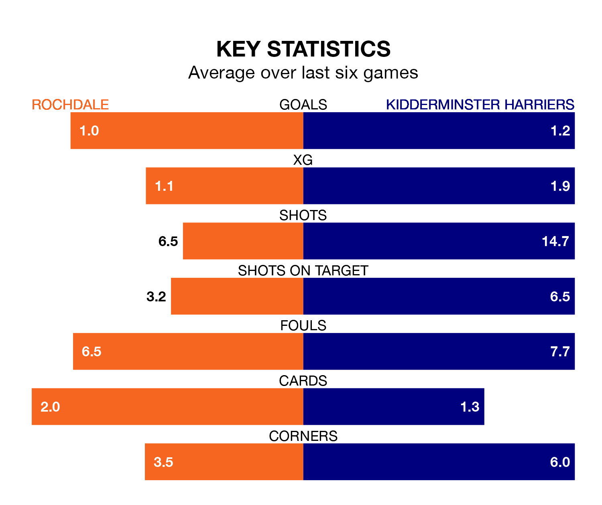

Kidderminster Harriers travel to Rochdale on Saturday in National League.
The visitors come into the game on the back of a defeat in their last match, having lost to Boreham Wood 2-1 at home, with a goal from Gold Ire Omotayo Agbomoagan.
The Dale also lost their last match, 2-0 against Fylde.
Kidderminster Harriers are bottom of the table after 27 games, of which they have won four and drawn eight, earning 20 points.
Rochdale are 13 places ahead of Kiddy in 11th, with 10 wins and eight draws putting them on 38 points.
With 20 goals in 27 games so far this season, the visitors are the league's lowest scorers with 0.7 goals per game. But they are conceding fewer than average too, letting in 35 goals at a rate of 1.3 per game.
The Dale, meanwhile, are above average scorers, with 1.6 goals per game, compared to a league average of 1.5. They have conceded 1.4 goals per game.
In Christian Dibble, Kidderminster Harriers can rely on one of the league's safest pair of hands. He has kept seven clean sheets in his 27 appearances this season in National League.
In the home team's net, Louie Moulden has five clean sheets in 27 games. He has conceded a goal every 64 minutes, 20% more often than the 74 minutes between goals for Dibble.
Rochdale are in mixed form in National League, with two wins and two draws from their last six games.
With a win and two draws over that period, Kidderminster Harriers's form is worse – they have taken five points from 18, compared to Rochdale's eight.
Updated: 12:57, 02/01/24